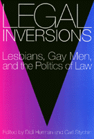

An exploration of the contested field of gay and lesbian sexuality and the law
An exploration of the contested field of gay and lesbian sexuality and the law


 An exploration of the contested field of gay and lesbian sexuality and the law
An exploration of the contested field of gay and lesbian sexuality and the law

|  |
Legal InversionsLesbians, Gay Men, and the Politics of the Lawedited by Didi Herman and Carl Stychinpaper EAN: 978-1-56639-377-5 (ISBN: 1-56639-377-9) |
"[A]n interesting and well-balanced collection [that] will clearly stand out in the 'queer studies' market. It deserves to be read by lawyers and non-lawyers alike and offers an excellent comparative perspective on political struggles being fought in contemporary Western societies."
—International Journal of Discrimination and the Law
Law reform struggles have always been a part of the grassroots lesbian and gay agenda. These critical essays examine the politics of these engagements, of lesbians, gay men, and the law in the United States, Canada, and the United Kingdom. From a wide range of perspectives, the contributors combine new conceptual insights with a concern for the practicalities of political engagements, tackling such vital topics as legal definitions of homosexuality, AIDS activism, and race and sexuality.
Excerpt available at www.temple.edu/tempress
"This is an important collection of essays focusing on how the law constructs homosexuality and how lesbian and gay rights activists use (or perhaps misuse) available legal categories to argue for the extension of rights to lesbian, bisexual, and gay persons. Existing scholarship on the social construction of homosexuality will be enriched by the critical insights of the legal academics who have contributed to this volume. I highly recommend Legal Inversions to everyone interested in the law's role in shaping the current debate over lesbian and gay rights. I particularly recommend it to American readers who may be unfamiliar with some of the legal battles discussed in essays by authors from Britain, Ireland, and Canada."
—Patricia A. Cain, Professor of Law, University of Iowa
"Both informative and provocative, this book presents a variety of useful perspectives on law's relationship to lesbian and gay communities. Among several outstanding essays, I particularly liked those on lesbian baby boomers and the Massachusetts Gay Civil Rights Bill."
—William Eskeridge, Professor of Law, Georgetown University
"Legal Inversions is truly a groundbreaking collection. It brings together work from four North Atlantic countries, and thus offers a broad perspective. The authors bring us up to date on the legal situation facing lesbians and gays in these countries. Most importantly, they significantly advance the discussions concerning the relation between law and other social institutions; rather than offering neat doctrinal solutions to our problems, these essays open up the question of law's efficacy and value in social change. This book is must reading for students of law and social change."
—Shane Phelan, Associate Professor of Political Science, University of New Mexico
Acknowledgments
Introductions – Didi Herman and Carl Stychin
Part I: The Subjects of Law
1. The Homosexualization of English Law – Leslie J. Moran
2. The Irish Supreme Court and the Constitution of Male Homosexuality – Leo Flynn
3. Homosexual Unmodified: Speculations on Law's Discourse, Race, and Construction of Sexual Identity – Mary Eaton
Part II: The Implications of Strategy
4. Familial Disputes? Sperm Donors, Lesbian Mothers, and Legal Personhood – Katherine Arnup and Susan Boyd
5. A Parent(ly) Knot: Can Heather Have Two Mommies? – Shelley A.M. Gavigan
6. Envisioning a Lesbian Equality Jurisprudence – Cynthia Peterson
Part III: Law Reform, Struggle, and the State
7. Sex, Lies, and Civil Rights: A Critical History of the Massachusetts Gay Civil Rights Bill – Peter M. Cicchino, Bruce R. Deming, and Katherine M. Nicholson
8. Getting "The Family Right": Legislating Heterosexuality in Britain, 1986-1991 –
Davina Cooper and Didi Herman
9. Convictions: Theorizing Lesbians and Criminal Justice – Ruthann Robson
10. People with HIV/AIDS, Gay Men, and Lesbians: Shifting Identities, Shifting Priorities – William F. Flanagan
About the Editors and Contributors
Index
Didi Herman is Senior Lecturer in Law at Keele University, United Kingdom, and author of Rights of Passage: Struggles for Lesbian and Gay Equality.
Carl Stychin is Lecturer in Law at Keele University, and author of Law's Desire: Sexuality and the Limits of Justice.
Contributors: Kathering Arnup, Susan Boyd, Peter M. Cicchino, Davina Cooper, Bruce R. Deming, Mary Eaton, William F. Flanagan, Leo Flynn, Shelley A. M. Gavigan, Leslie J. Moran, Katherine M. Nicholson, Cynthia Petersen, Ruthann Robson, and the editors.
Law and Criminology
Gender Studies
© 2015 Temple University. All Rights Reserved. This page: http://www.temple.edu/tempress/titles/1170_reg.html.